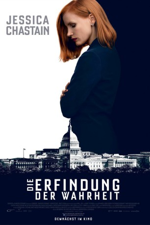

#7436 Die Erfindung der Wahrheit
 gesehen am 19.12.2017
gesehen am 19.12.2017
 
 IMDB-Wertung: 7.4 / 10
IMDB-Wertung: 7.4 / 10  Metascore: 0
Metascore: 0 
Der 2. Zusatzartikel zur Verfassung der Vereinigten Staaten von Amerika, der Einschränkungen im Besitz und Tragen von Waffen seitens der Bundesregierung verbietet, ist seit Jahren politischer Sprengstoff. Auf diesem Schlachtfeld agiert die überaus erfolgreiche politische Strategin Elizabeth Sloane , die auf Grund ihrer Ambition und Skrupellosigkeit eine überaus erfolgreiche Vertreterin ihres Metiers darstellt. Dabei stellt sie die ausbeuterische Welt der Lobbyisten auf beiden Seiten der Debatte im Diskurs über Waffenkontrolle bloß. Ein neues Gesetz, welches strengere Überprüfungen von Waffenbesitzern fordert, gewinnt zunehmend an Zugkraft im Kongress. Sloane wird zur Vorkämpferin der Kampagne, wodurch sie sich einer Vielzahl politischer Gegner gegenübersieht. Mit ihrem allseits bekannten Geschick und von einem eisernen Siegeswillen angetrieben, gefährdet sie ausgerechnet all jene, die ihr am meisten bedeuten. Und auch ihre Karriere ist zunehmend in Gefahr...
Jahr: 2016
Dauer: 132 Minuten
FSK: 12
Land: Frankreich Studio: Universum FilmTonspuren: DTS - ,
Untertitel: Deutsch, Englisch,
Auflösung: 1080p (1920x808) Größe: 6440 MB
Genre: Thriller, Drama
Regisseur: John Madden
Drehbuch: Jonathan Perera
Soundtrack:
Darsteller:
- Jeffrey Barnes als Police Officer , uncredited
 Mark Strong als Rodolfo Schmidt
Mark Strong als Rodolfo Schmidt Alison Pill als Jane Molloy
Alison Pill als Jane Molloy Gugu Mbatha-Raw als Esme Manucharian
Gugu Mbatha-Raw als Esme Manucharian Christine Baranski als Evelyn Sumner
Christine Baranski als Evelyn Sumner Michael Stuhlbarg als Pat Connors
Michael Stuhlbarg als Pat Connors John Lithgow als Senator Ronald M. Sperling
John Lithgow als Senator Ronald M. Sperling Jake Lacy als Forde
Jake Lacy als Forde Dylan Baker als Jon O'Neill
Dylan Baker als Jon O'Neill Douglas Smith als Alex
Douglas Smith als Alex Sam Waterston als George Dupont
Sam Waterston als George Dupont Grace Lynn Kung als Lauren
Grace Lynn Kung als Lauren Ennis Esmer als Brian
Ennis Esmer als Brian- Meghann Fahy als Clara Thomson
- Greta Onieogou als Greta, CKW Junior
 Sergio Di Zio als Big Sam
Sergio Di Zio als Big Sam- Jack Murray als Buzz Cut Shooter
 Michael Cram als Frank McGill
Michael Cram als Frank McGill- David Wilson Barnes als Daniel Posner
- Noah Robbins als Franklin Walsh
 Joe Pingue als Little Sam
Joe Pingue als Little Sam- Alexandra Castillo als Pru Walsh
 Cyndy Day als Woman with iPad in Cafe
Cyndy Day als Woman with iPad in Cafe Chuck Shamata als Bill Sanford
Chuck Shamata als Bill Sanford- Al Mukadam als Ross
- Courtenay J. Stevens als Larsson
- Helen Johns als Lady in White
- Lucy Owen als Cynthia Green
- Doug Murray als Mike Gordon
- Kevin Jubinville als Senator Wallace
- Dallas Shaw als Woman in Pink Dress
- Raoul Bhaneja als R. M. Dutton
- Zach Smadu als Ramirez
- Murray Furrow als Parr
- Anand Rajaram als Dr. Raj Amarasekara / Matthew Kantaria
- Aaron Hale als Spencer
- Adam Crew als Photographer
- Carrie Beale als Reporter , uncredited
- Damien Dornford als Rally Reporter , uncredited
- Alan G. Kelly als Political talk show cameraman , uncredited
- Kyle Mac als Moore
- Angela Vint als Brenda Patterson
- Craig Eldridge als Senator Hank Badgley
- Gurdeep Ahluwalia als News Anchor
- Dave Reachill als TV Producer
 Elena Khan als Airplane passenger
Elena Khan als Airplane passenger- Shane Clinton Jarvis als Lobbyist
- Ola Sturik als TV Reporter
- Austin Strugnell als Travis O'Hara
- James McCarthy als Hallway Reporter
Datei: X:\2016(A-F)\Erfindung der Wahrheit, Die (2016, FSK12, 1920x808).mkv seit 10.11.2017
Festplatte: HD 2016(A-Z)
 Es gibt insgesamt 147 Filme in der Gruppe '2016(A-F)'
Es gibt insgesamt 147 Filme in der Gruppe '2016(A-F)'